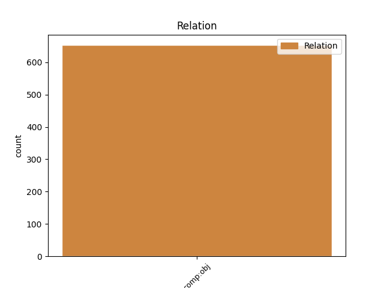
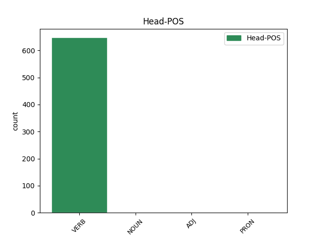
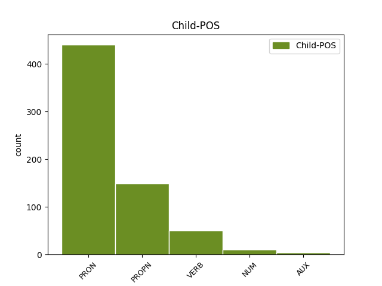

Distribution of features within this leaf



Agreement Rules sorted by frequency.
- When the dependent token is the direct object complements(comp:obj) of the head token, and the dependent token is PRON.
1 καὶ _ _ _ _ 0 _ _ _
2 ὁ _ _ _ _ 0 _ _ _
3 διάβολος _ _ _ _ 0 _ _ _
4 ὁ _ _ _ _ 0 _ _ _
5 πλανῶν πλανάω VERB V- Case=Nom|Gender=Masc|Number=Sing|Tense=Pres|VerbForm=Part|Voice=Act 0 _ _ _
6 αὐτοὺς αὐτός PRON Pp Case=Acc|Gender=Masc|Number=Plur|Person=3|PronType=Prs 5 comp:obj _ ref=REV_20.10
7 ἐβλήθη _ _ _ _ 0 _ _ _
8 εἰς _ _ _ _ 0 _ _ _
9 τὴν _ _ _ _ 0 _ _ _
10 λίμνην _ _ _ _ 0 _ _ _
11 τοῦ _ _ _ _ 0 _ _ _
12 πυρὸς _ _ _ _ 0 _ _ _
13 καὶ _ _ _ _ 0 _ _ _
14 τοῦ _ _ _ _ 0 _ _ _
15 θείου _ _ _ _ 0 _ _ _
16 ὅπου _ _ _ _ 0 _ _ _
17 καὶ _ _ _ _ 0 _ _ _
18 τὸ _ _ _ _ 0 _ _ _
19 θηρίον _ _ _ _ 0 _ _ _
20 καὶ _ _ _ _ 0 _ _ _
21 ὁ _ _ _ _ 0 _ _ _
22 ψευδοπροφήτης _ _ _ _ 0 _ _ _
23 καὶ _ _ _ _ 0 _ _ _
24 βασανισθήσονται _ _ _ _ 0 _ _ _
25 ἡμέρας _ _ _ _ 0 _ _ _
26 καὶ _ _ _ _ 0 _ _ _
27 νυκτὸς _ _ _ _ 0 _ _ _
28 εἰς _ _ _ _ 0 _ _ _
29 τοὺς _ _ _ _ 0 _ _ _
30 αἰῶνας _ _ _ _ 0 _ _ _
31 τῶν _ _ _ _ 0 _ _ _
32 αἰώνων _ _ _ _ 0 _ _ _
1 Μᾶρκον Μᾶρκος PROPN Ne Case=Acc|Gender=Masc|Number=Sing 2 comp:obj _ ref=2TIM_4.11
2 ἀναλαβὼν ἀναλαμβάνω VERB V- Aspect=Perf|Case=Nom|Gender=Masc|Number=Sing|Tense=Past|VerbForm=Part|Voice=Act 0 _ _ _
3 ἄγε _ _ _ _ 0 _ _ _
4 μετὰ _ _ _ _ 0 _ _ _
5 σεαυτοῦ _ _ _ _ 0 _ _ _
1 δοῦλον _ _ _ _ 0 _ _ _
2 δὲ _ _ _ _ 0 _ _ _
3 κυρίου _ _ _ _ 0 _ _ _
4 οὐ _ _ _ _ 0 _ _ _
5 δεῖ _ _ _ _ 0 _ _ _
6 μάχεσθαι _ _ _ _ 0 _ _ _
7 ἀλλὰ _ _ _ _ 0 _ _ _
8 ἤπιον _ _ _ _ 0 _ _ _
9 εἶναι _ _ _ _ 0 _ _ _
10 πρὸς _ _ _ _ 0 _ _ _
11 πάντας _ _ _ _ 0 _ _ _
12 διδακτικόν _ _ _ _ 0 _ _ _
13 ἀνεξίκακον _ _ _ _ 0 _ _ _
14 ἐν _ _ _ _ 0 _ _ _
15 πραΰτητι _ _ _ _ 0 _ _ _
16 παιδεύοντα παιδεύω VERB V- Case=Acc|Gender=Masc|Number=Sing|Tense=Pres|VerbForm=Part|Voice=Act 0 _ _ _
17 τοὺς _ _ _ _ 0 _ _ _
18 ἀντιδιατιθεμένους ἀντιδιατίθημι VERB V- Case=Acc|Gender=Masc|Number=Plur|Tense=Pres|VerbForm=Part|Voice=Mid 16 comp:obj _ ref=2TIM_2.25
19 μήποτε _ _ _ _ 0 _ _ _
20 δώῃ _ _ _ _ 0 _ _ _
21 αὐτοῖς _ _ _ _ 0 _ _ _
22 ὁ _ _ _ _ 0 _ _ _
23 θεὸς _ _ _ _ 0 _ _ _
24 μετάνοιαν _ _ _ _ 0 _ _ _
25 εἰς _ _ _ _ 0 _ _ _
26 ἐπίγνωσιν _ _ _ _ 0 _ _ _
27 ἀληθείας _ _ _ _ 0 _ _ _
28 καὶ _ _ _ _ 0 _ _ _
29 ἀνανήψωσιν _ _ _ _ 0 _ _ _
30 ἐκ _ _ _ _ 0 _ _ _
31 τῆς _ _ _ _ 0 _ _ _
32 τοῦ _ _ _ _ 0 _ _ _
33 διαβόλου _ _ _ _ 0 _ _ _
34 παγίδος _ _ _ _ 0 _ _ _
35 ἐζωγρημένοι _ _ _ _ 0 _ _ _
36 ὑπ’ _ _ _ _ 0 _ _ _
37 αὐτοῦ _ _ _ _ 0 _ _ _
38 εἰς _ _ _ _ 0 _ _ _
39 τὸ _ _ _ _ 0 _ _ _
40 ἐκείνου _ _ _ _ 0 _ _ _
41 θέλημα _ _ _ _ 0 _ _ _
1 προσκαλεσάμενος προσκαλέω VERB V- Aspect=Perf|Case=Nom|Gender=Masc|Number=Sing|Tense=Past|VerbForm=Part|Voice=Mid 0 _ _ _
2 δὲ _ _ _ _ 0 _ _ _
3 ὁ _ _ _ _ 0 _ _ _
4 Παῦλος _ _ _ _ 0 _ _ _
5 ἕνα εἷς NUM Ma Case=Acc|Gender=Masc|Number=Sing 1 comp:obj _ ref=ACTS_23.17
6 τῶν _ _ _ _ 0 _ _ _
7 ἑκατονταρχῶν _ _ _ _ 0 _ _ _
8 ἔφη _ _ _ _ 0 _ _ _
1 ἐκ _ _ _ _ 0 _ _ _
2 πολλῶν _ _ _ _ 0 _ _ _
3 ἐτῶν _ _ _ _ 0 _ _ _
4 ὄντα εἰμί AUX V- Case=Acc|Gender=Masc|Number=Sing|Tense=Pres|VerbForm=Part|Voice=Act 10 comp:obj _ LId=1|ref=ACTS_24.10
5 σε _ _ _ _ 0 _ _ _
6 κριτὴν _ _ _ _ 0 _ _ _
7 τῷ _ _ _ _ 0 _ _ _
8 ἔθνει _ _ _ _ 0 _ _ _
9 τούτῳ _ _ _ _ 0 _ _ _
10 ἐπιστάμενος ἐφίστημι VERB V- Aspect=Perf|Case=Nom|Gender=Masc|Number=Sing|Tense=Past|VerbForm=Part|Voice=Mid 0 _ _ _
11 εὐθύμως _ _ _ _ 0 _ _ _
12 τὰ _ _ _ _ 0 _ _ _
13 περὶ _ _ _ _ 0 _ _ _
14 ἐμαυτοῦ _ _ _ _ 0 _ _ _
15 ἀπολογοῦμαι _ _ _ _ 0 _ _ _
16 δυναμένου _ _ _ _ 0 _ _ _
17 σου _ _ _ _ 0 _ _ _
18 ἐπιγνῶναι _ _ _ _ 0 _ _ _
19 ὅτι _ _ _ _ 0 _ _ _
20 οὐ _ _ _ _ 0 _ _ _
21 πλείους _ _ _ _ 0 _ _ _
22 εἰσίν _ _ _ _ 0 _ _ _
23 μοι _ _ _ _ 0 _ _ _
24 ἡμέραι _ _ _ _ 0 _ _ _
25 δώδεκα _ _ _ _ 0 _ _ _
26 ἀφ’ _ _ _ _ 0 _ _ _
27 ἧς _ _ _ _ 0 _ _ _
28 ἀνέβην _ _ _ _ 0 _ _ _
29 προσκυνήσων _ _ _ _ 0 _ _ _
30 εἰς _ _ _ _ 0 _ _ _
31 Ἱερουσαλήμ _ _ _ _ 0 _ _ _
32 καὶ _ _ _ _ 0 _ _ _
33 οὔτε _ _ _ _ 0 _ _ _
34 ἐν _ _ _ _ 0 _ _ _
35 τῷ _ _ _ _ 0 _ _ _
36 ἱερῷ _ _ _ _ 0 _ _ _
37 εὗρόν _ _ _ _ 0 _ _ _
38 με _ _ _ _ 0 _ _ _
39 πρός _ _ _ _ 0 _ _ _
40 τινα _ _ _ _ 0 _ _ _
41 διαλεγόμενον _ _ _ _ 0 _ _ _
42 ἢ _ _ _ _ 0 _ _ _
43 ἐπίστασιν _ _ _ _ 0 _ _ _
44 ποιοῦντα _ _ _ _ 0 _ _ _
45 ὄχλου _ _ _ _ 0 _ _ _
46 οὔτε _ _ _ _ 0 _ _ _
47 ἐν _ _ _ _ 0 _ _ _
48 ταῖς _ _ _ _ 0 _ _ _
49 συναγωγαῖς _ _ _ _ 0 _ _ _
50 οὔτε _ _ _ _ 0 _ _ _
51 κατὰ _ _ _ _ 0 _ _ _
52 τὴν _ _ _ _ 0 _ _ _
53 πόλιν _ _ _ _ 0 _ _ _
54 οὐδὲ _ _ _ _ 0 _ _ _
55 παραστῆσαι _ _ _ _ 0 _ _ _
56 δύνανταί _ _ _ _ 0 _ _ _
57 σοι _ _ _ _ 0 _ _ _
58 περὶ _ _ _ _ 0 _ _ _
59 ὧν _ _ _ _ 0 _ _ _
60 νυνὶ _ _ _ _ 0 _ _ _
61 κατηγοροῦσίν _ _ _ _ 0 _ _ _
62 μου _ _ _ _ 0 _ _ _
Disagree Examples:
1 οὕτω _ _ _ _ 0 _ _ _
2 δὴ _ _ _ _ 0 _ _ _
3 ἁρπάσαντος ἁρπάζω VERB V- Aspect=Perf|Case=Gen|Gender=Masc|Number=Sing|Tense=Past|VerbForm=Part|Voice=Act 0 _ _ _
4 αὐτοῦ _ _ _ _ 0 _ _ _
5 Ἑλένην Ἑλένη PROPN Ne Case=Acc|Gender=Fem|Number=Sing 3 comp:obj _ ref=1.3.2
6 τοῖσι _ _ _ _ 0 _ _ _
7 Ἕλλησι _ _ _ _ 0 _ _ _
8 δόξαι _ _ _ _ 0 _ _ _
9 πρῶτὸν _ _ _ _ 0 _ _ _
10 πέμψαντας _ _ _ _ 0 _ _ _
11 ἀγγέλους _ _ _ _ 0 _ _ _
12 ἀπαιτέειν _ _ _ _ 0 _ _ _
13 τε _ _ _ _ 0 _ _ _
14 Ἑλένην _ _ _ _ 0 _ _ _
15 καὶ _ _ _ _ 0 _ _ _
16 δίκας _ _ _ _ 0 _ _ _
17 τῆς _ _ _ _ 0 _ _ _
18 ἁρπαγῆς _ _ _ _ 0 _ _ _
19 αἰτέειν _ _ _ _ 0 _ _ _
1 ἀποθωμάσας ἀποθαυμάζω VERB V- Aspect=Perf|Case=Nom|Gender=Masc|Number=Sing|Tense=Past|VerbForm=Part|Voice=Act 0 _ _ _
2 δὲ _ _ _ _ 0 _ _ _
3 Κροῖσος _ _ _ _ 0 _ _ _
4 τὸ _ _ _ _ 0 _ _ _
5 λεχθὲν λέγω VERB V- Aspect=Perf|Case=Acc|Gender=Neut|Number=Sing|Tense=Past|VerbForm=Part|Voice=Pass 1 comp:obj _ ref=1.30.4
6 εἴρετο _ _ _ _ 0 _ _ _
7 ἐπιστρεφέως _ _ _ _ 0 _ _ _
1 εὑρόντες εὑρίσκω VERB V- Aspect=Perf|Case=Nom|Gender=Masc|Number=Plur|Tense=Past|VerbForm=Part|Voice=Act 0 _ _ _
2 δὲ _ _ _ _ 0 _ _ _
3 καὶ _ _ _ _ 0 _ _ _
4 περιστάντες _ _ _ _ 0 _ _ _
5 αὐτὸ αὐτός PRON Pp Case=Acc|Gender=Neut|Number=Sing|Person=3|PronType=Prs 1 comp:obj _ ref=1.43.1
6 κύκλῳ _ _ _ _ 0 _ _ _
7 ἐσηκόντιζον _ _ _ _ 0 _ _ _
1 ἔθεε _ _ _ _ 0 _ _ _
2 δέ _ _ _ _ 0 _ _ _
3 τις _ _ _ _ 0 _ _ _
4 ἀγγελέων ἀγγέλλω VERB V- Case=Nom|Gender=Masc|Number=Sing|Tense=Fut|VerbForm=Part|Voice=Act 0 _ _ _
5 τῷ _ _ _ _ 0 _ _ _
6 Κροίσῳ _ _ _ _ 0 _ _ _
7 τὸ _ _ _ _ 0 _ _ _
8 γεγονός γίγνομαι VERB V- Aspect=Perf|Case=Acc|Gender=Neut|Number=Sing|Tense=Past|VerbForm=Part|Voice=Act 4 comp:obj _ ref=1.43.3
1 περιημεκτέων _ _ _ _ 0 _ _ _
2 δὲ _ _ _ _ 0 _ _ _
3 τῇ _ _ _ _ 0 _ _ _
4 συμφορῇ _ _ _ _ 0 _ _ _
5 δεινῶς _ _ _ _ 0 _ _ _
6 ἐκάλεε _ _ _ _ 0 _ _ _
7 μὲν _ _ _ _ 0 _ _ _
8 Δία _ _ _ _ 0 _ _ _
9 καθάρσιον _ _ _ _ 0 _ _ _
10 μαρτυρόμενος _ _ _ _ 0 _ _ _
11 τὰ ὁ PRON Pr Case=Acc|Gender=Neut|Number=Plur|PronType=Rel 15 comp:obj _ ref=1.44.2
12 ὑπὸ _ _ _ _ 0 _ _ _
13 τοῦ _ _ _ _ 0 _ _ _
14 ξείνου _ _ _ _ 0 _ _ _
15 πεπονθὼς πάσχω VERB V- Aspect=Perf|Case=Nom|Gender=Masc|Number=Sing|Tense=Past|VerbForm=Part|Voice=Act 0 _ _ _
16 εἴη _ _ _ _ 0 _ _ _
17 ἐκάλεε _ _ _ _ 0 _ _ _
18 δὲ _ _ _ _ 0 _ _ _
19 ἐπίστιόν _ _ _ _ 0 _ _ _
20 τε _ _ _ _ 0 _ _ _
21 καὶ _ _ _ _ 0 _ _ _
22 ἑταιρήιον _ _ _ _ 0 _ _ _
23 τὸν _ _ _ _ 0 _ _ _
24 αὐτὸν _ _ _ _ 0 _ _ _
25 τοῦτον _ _ _ _ 0 _ _ _
26 ὀνομάζων _ _ _ _ 0 _ _ _
27 θεόν _ _ _ _ 0 _ _ _
28 τὸν _ _ _ _ 0 _ _ _
29 μὲν _ _ _ _ 0 _ _ _
30 ἐπίστιον _ _ _ _ 0 _ _ _
31 καλέων _ _ _ _ 0 _ _ _
32 διότι _ _ _ _ 0 _ _ _
33 δὴ _ _ _ _ 0 _ _ _
34 οἰκίοισι _ _ _ _ 0 _ _ _
35 ὑποδεξάμενος _ _ _ _ 0 _ _ _
36 τὸν _ _ _ _ 0 _ _ _
37 ξεῖνον _ _ _ _ 0 _ _ _
38 φονέα _ _ _ _ 0 _ _ _
39 τοῦ _ _ _ _ 0 _ _ _
40 παιδὸς _ _ _ _ 0 _ _ _
41 ἐλάνθανε _ _ _ _ 0 _ _ _
42 βόσκων _ _ _ _ 0 _ _ _
43 τὸν _ _ _ _ 0 _ _ _
44 δὲ _ _ _ _ 0 _ _ _
45 ἑταιρήιον _ _ _ _ 0 _ _ _
46 ὡς _ _ _ _ 0 _ _ _
47 φύλακα _ _ _ _ 0 _ _ _
48 συμπέμψας _ _ _ _ 0 _ _ _
49 αὐτὸν _ _ _ _ 0 _ _ _
50 εὑρήκοι _ _ _ _ 0 _ _ _
51 πολεμιώτατον _ _ _ _ 0 _ _ _